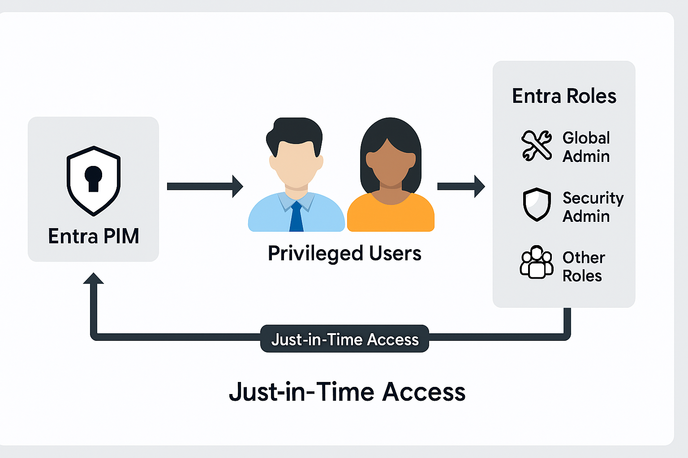

Challenge
Standing admin privileges posed a security risk across the tenant. The goal was to implement Microsoft Entra Privileged Identity Management (PIM) to enforce just-in-time access, reduce exposure, and align with least privilege principles.
Tools & Technologies
- Microsoft Entra Privileged Identity Management (PIM)
- Microsoft Entra Admin Center
- Role Activation Policies
- Access Reviews & Audit Logs
- Microsoft Learn Deployment Guides
Implementation
- Followed Microsoft’s [PIM Getting Started](https://learn.microsoft.com/en-us/entra/id-governance/privileged-identity-management/pim-getting-started) and [Deployment Plan](https://learn.microsoft.com/en-us/entra/id-governance/privileged-identity-management/pim-deployment-plan)
- Enabled PIM for Microsoft Entra roles and Azure resource roles
- Configured role settings: MFA, approval, justification, and time-bound activation
- Assigned eligible roles to Global Admins, Security Admins, and other privileged roles
- Trained junior staff on how to activate roles securely and responsibly
- Monitored activations and reviewed audit logs for compliance
Architecture Diagram
This placeholder diagram will be replaced with the final version:
Impact
- Eliminated standing admin privileges across the tenant
- Improved security posture through just-in-time access
- Reduced risk of privilege misuse or compromise
- Established a repeatable model for secure role governance